一、性能总表（进水流量）
| 数据 | 超前 | LightGBM NSE | LSTM NSE | MLP NSE | 季节朴素 | 当前值基线 | LGBM MAE |
|---|---|---|---|---|---|---|---|
| Köln（真实） | +1h | 0.943 | 0.922 | 0.783 | −0.734 | 0.839 | 15.3 L/s |
| Köln（真实） | +2h | 0.807 | 0.787 | 0.128 | −0.734 | 0.623 | 30.2 L/s |
| Köln（真实） | +3h | 0.676 | 0.637 | 0.122 | −0.734 | 0.423 | 40.5 L/s |
| 泰和（模拟） | +1h | 0.983 | 0.983 | 0.980 | 0.826 | 0.762 | 85.7 m³/h |
| 泰和（模拟） | +2h | 0.972 | 0.970 | 0.971 | 0.826 | 0.207 | 98.6 m³/h |
| 泰和（模拟） | +3h | 0.956 | 0.951 | 0.959 | 0.825 | −0.530 | 113.9 m³/h |
训练/测试按发布时间时间顺序 75%/25% 切分，训练标签早于首个测试发布时间；各模型共用同一切分与发布时刻语义。出处：reports/forecast_metrics.json、reports/deep_forecast.json。
水质口径：浓度与负荷分开评估
| 目标（泰和模拟） | +1h | +2h | +3h | 说明 |
|---|---|---|---|---|
| COD 浓度 NSE | 0.101 | −0.047 | −0.171 | 不可靠，如实保留 |
| COD 负荷 NSE | 0.801 | 0.774 | 0.767 | 负荷=浓度×流量，主要增益来自流量 |
| 氨氮浓度 NSE | 0.336 | 0.301 | 0.260 | 弱可预测 |
| 氨氮负荷 NSE | 0.914 | 0.914 | 0.914 | 随提前量变化小（模拟机理所致） |
负荷成绩不能替代浓度评估；真实水质可预测性需实厂时序进一步验证。
概率区间（P10–P90，名义 80%）
| 场景 | +1h PICP | +2h PICP | +3h PICP | 结论 |
|---|---|---|---|---|
| Köln（真实） | 71.5% | 72.1% | 73.8% | 六组全部欠覆盖 → 未校准，不作保守上界 |
| 泰和（模拟） | 69.1% | 67.5% | 68.4% |
二、数据体系图表
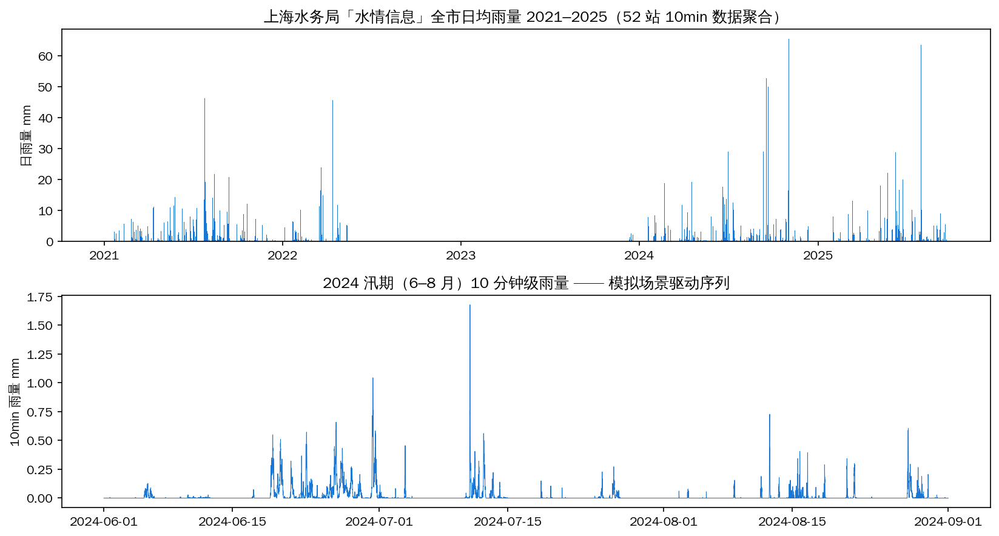
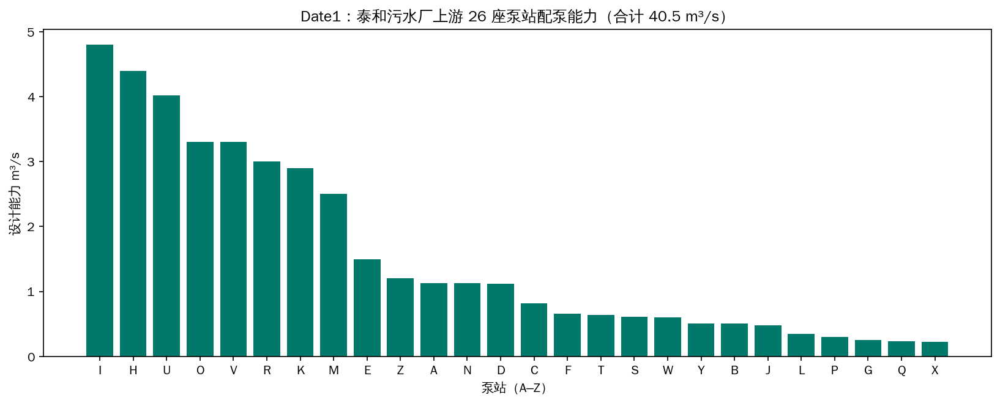
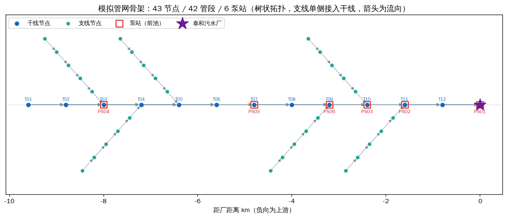
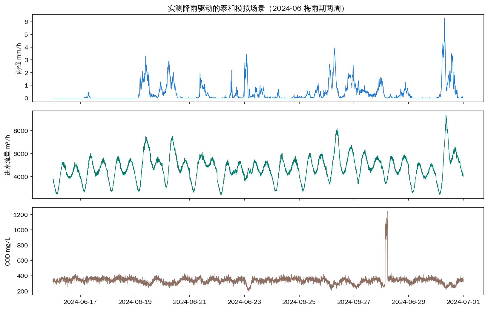
三、超前预测图表
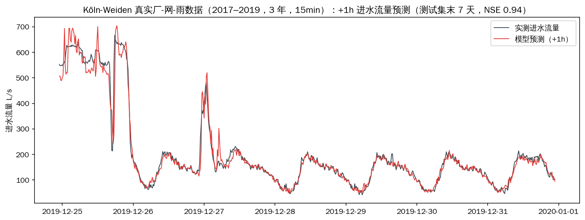
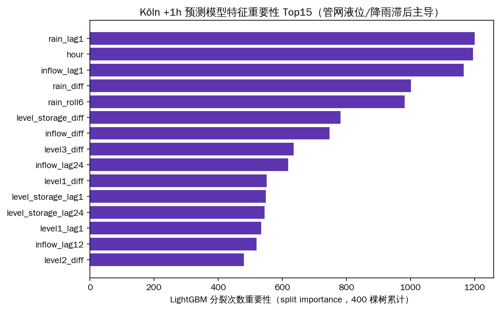
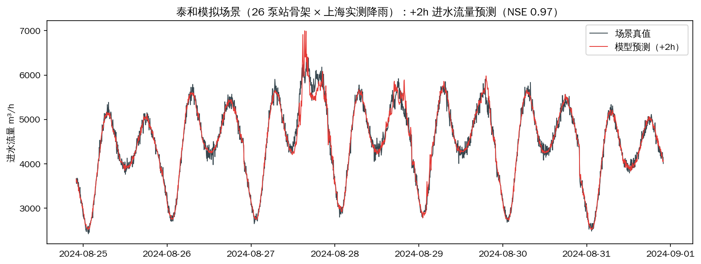
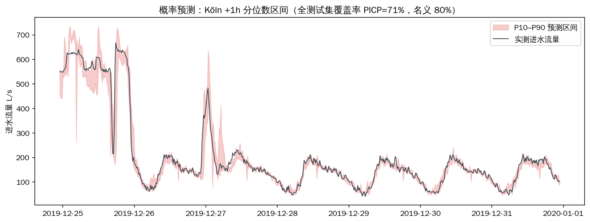
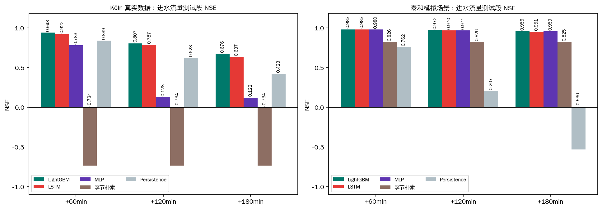
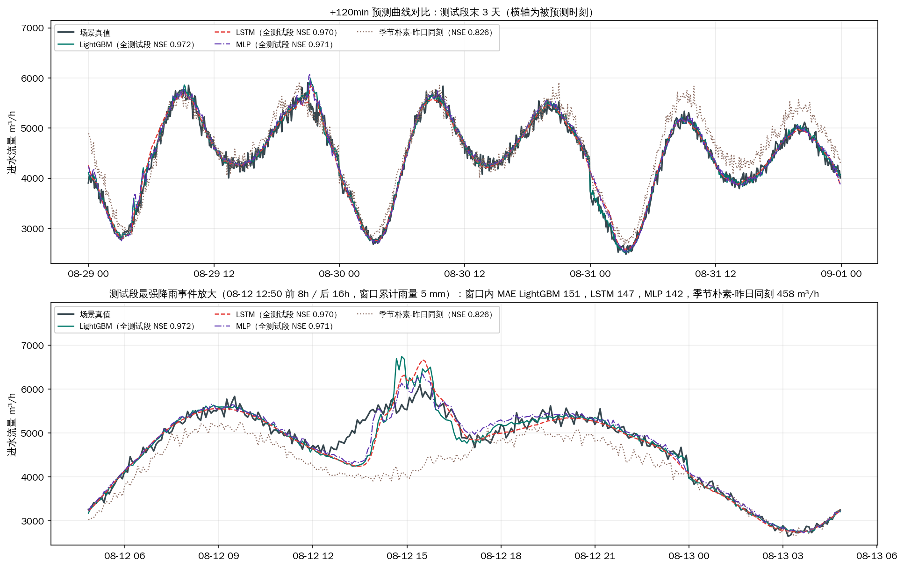

四、训练 / 运行耗时（2 线程 CPU，无 GPU）
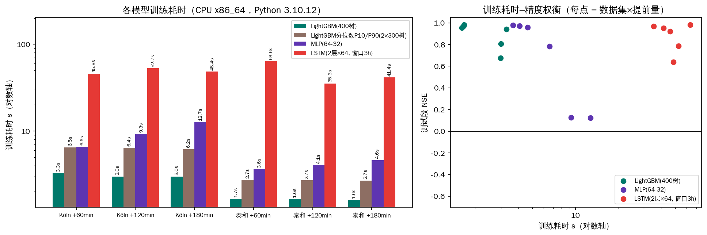
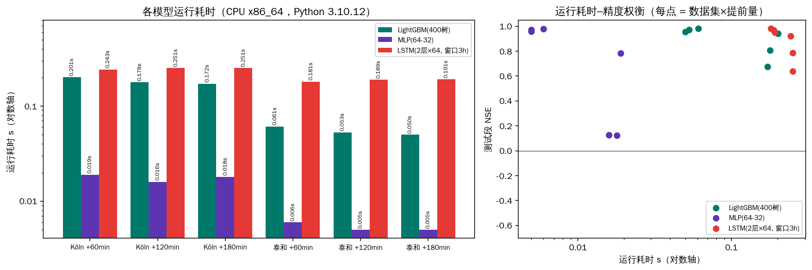
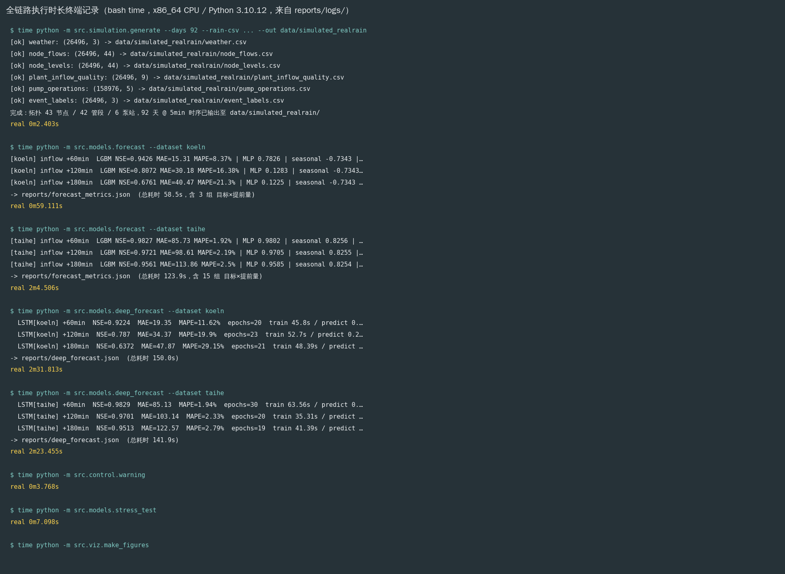
reports/logs/）| 数据 | 超前 | LightGBM 训练 | LightGBM 推理 | LSTM 训练 | LSTM 推理 |
|---|---|---|---|---|---|
| Köln | +60 min | 3.3 s | 0.20 s | 45.8 s | 0.24 s |
| 泰和 | +60 min | 1.7 s | 0.06 s | 63.6 s | 0.18 s |
同精度档位下树模型训练便宜一个数量级——这是选型的直接依据之一。
五、极端场景与跨厂迁移
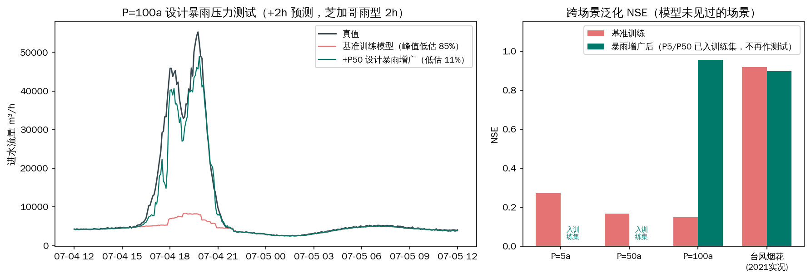
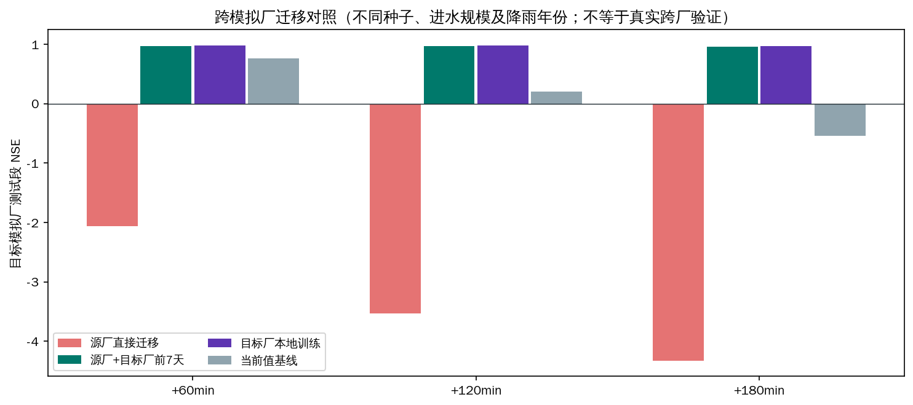
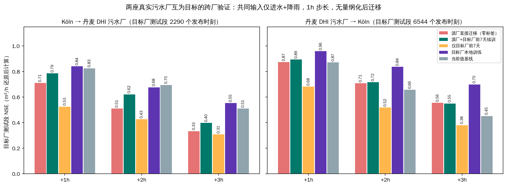
| 场景 | 洪峰真值 | 基准 NSE | 洪峰误差 | 增广后 |
|---|---|---|---|---|
| P=5a 设计暴雨 | 34,782 m³/h | 0.271 | −76% | （进入训练集，不再独立） |
| P=50a 设计暴雨 | 50,530 m³/h | 0.167 | −83% | （进入训练集，不再独立） |
| P=100a 设计暴雨 | 55,271 m³/h | 0.149 | −85% | NSE 0.954 / 峰值误差 −11% |
| 台风"烟花"（2021 实况） | 8,484 m³/h | 0.917 | −2%~−5% | 0.897 / −3%~+9% |
设计暴雨未经目标厂水力率定，不把模拟改善当作已实现的防涝收益。出处：reports/stress_test.json。
| 真实跨厂（+2h） | 零标签直迁 | +前7天续训 | 目标厂本地 | 当前值基线 |
|---|---|---|---|---|
| Köln → 丹麦 | 0.511 | 0.622 | 0.677 | 0.695 |
| 丹麦 → Köln | 0.708 | 0.717 | 0.837 | 0.657 |
两座真实厂不足推断任意厂泛化；结论是"迁移有效但不及本地训练，新厂上线先旁路评估/重训"。出处：reports/real_transfer.json。
六、SHAP 可解释性
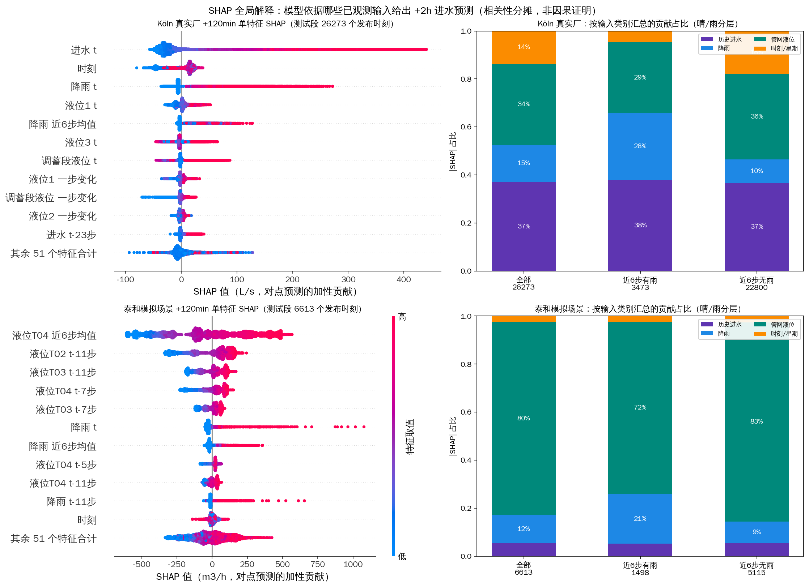
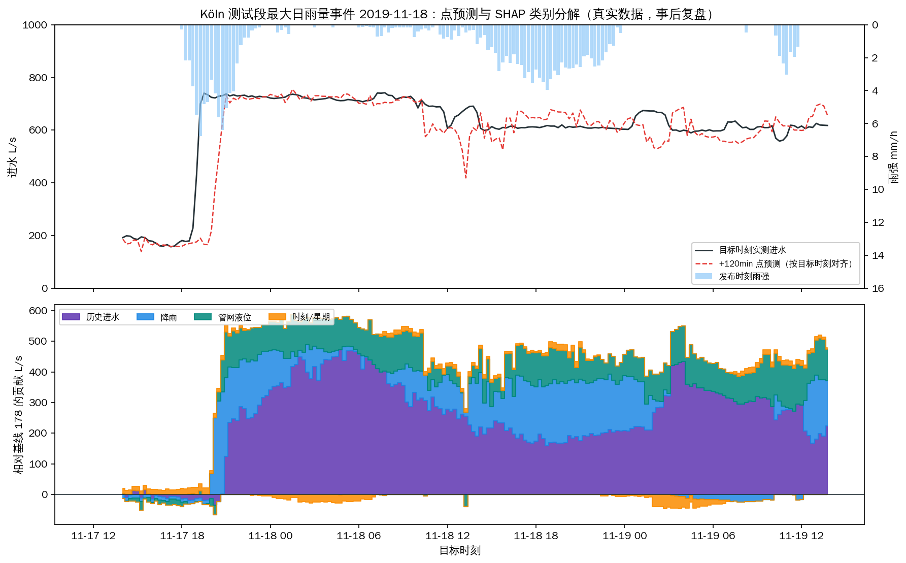
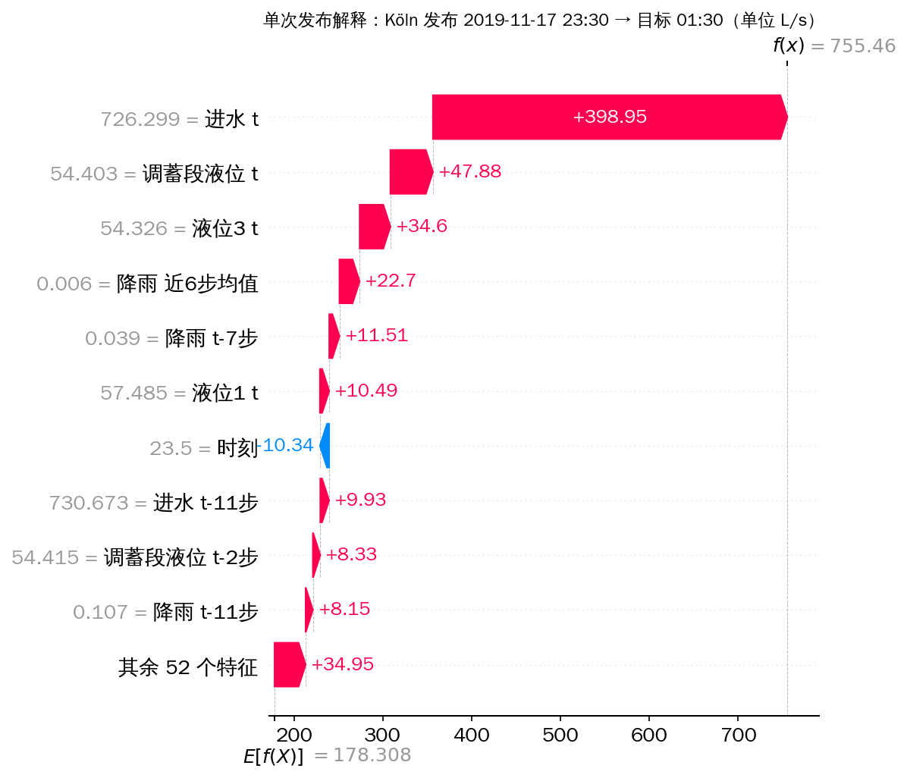
| 站点 | 解释样本 | 加性误差上限 | 历史进水 | 管网液位 | 降雨 | 时刻/星期 |
|---|---|---|---|---|---|---|
| Köln 真实（+2h） | 26,273 | 2.0e-11 | 37% | 34% | 15% | 14% |
| 泰和模拟（+2h） | 6,613 | 4.7e-11 | 5% | 80% | 12% | 3% |
近 6 步有雨时 Köln 降雨占比升至 28%，与雨天入流机理方向一致。SHAP 是模型输出的相关性分摊，不等于物理因果。出处：reports/shap_summary.json。
七、预警与 SWMM 调度
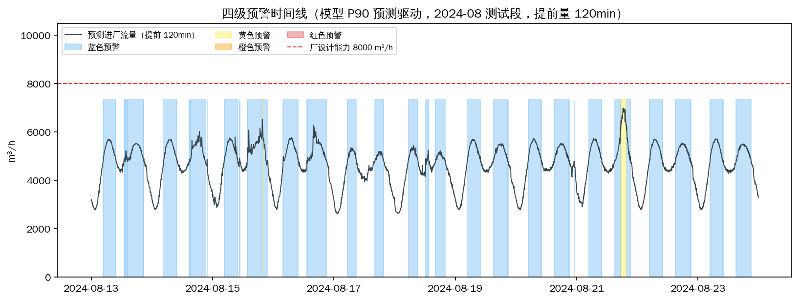
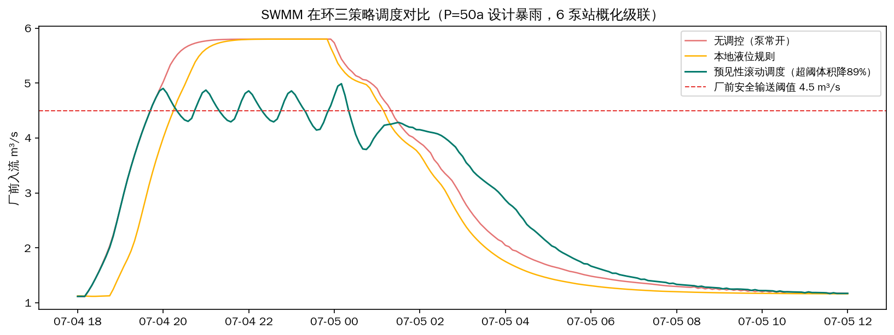
| 预警级 | 阈值（占设计能力） | 协同调控建议 | 模拟测试段表现 |
|---|---|---|---|
| 🔵 蓝色 | ≥ 60% | 加强监视：关注上游液位与雨量趋势 | — |
| 🟡 黄色 | ≥ 80% | 雨前预抽空：预降泵站前池液位 | 7/7 命中 · 误报 6 段 |
| 🟠 橙色 | ≥ 95% | 彭越浦总站错峰：支线泵站延迟 30~60min 开泵 | 无真实正例 |
| 🔴 红色 | ≥ 110% | 全网限流：上游泵站按能力 70% 限排 + 调蓄 | 无真实正例 |
预警结论仅限模拟场景；橙/红等级不能报告召回。出处：reports/benefit_summary.json。
| SWMM 策略（P=50a） | 峰值入流 | 超阈历时 | 超阈体积 | 前池冒溢体积 |
|---|---|---|---|---|
| 无调控（泵常开） | 5.80 m³/s | 5.6 h | 2.09 万m³ | 19.73 万m³ |
| 本地液位规则 | 5.80 | 4.9 h | 1.76 万m³ | 20.38 万m³ |
| 预见性滚动（防冒溢保护） | 5.80 | 4.6 h | 1.50 万m³（−28%） | 19.73 万m³（不增） |
| 预见性滚动（激进限排） | 4.99 | 2.8 h | 0.22 万m³（−89%） | 20.95 万m³（+6.2%） |
概化参数未经率定，价值在策略间相对比较与"削峰-冒溢权衡前沿"。出处：reports/swmm_control.json。
八、现场容错（Köln 真实数据 +2h 故障注入回放）
| 场景 | 严格模式可服务率 | 常规补齐 NSE | 容错模式 NSE |
|---|---|---|---|
| 无扰动 | 1.00 | 0.807 | 0.808 |
| 随机缺测 30% | 0.00 | 0.790 | 0.789 |
| 1% 尖峰 / 归零 | 1.00 | 0.763 | 0.797 |
| 进水计间歇离线（4h 块，约 20%） | 0.62 | 0.772 | 0.805 |
| 单个液位计整段离线 | 0.00 | 0.778 | 0.811 |
| 全部液位计离线 | 0.00 | 0.708 | 0.773 |
| 泰和·全部液位计离线 | 0.00 | −0.939 | 0.972 |
Köln +2h（n=26,273）故障注入回放，NSE 均为测试段口径。质量控制阈值从训练段学习；≤30min 缺测向前填充，更长判离线；过半液位计离线自动切换"进水+降雨"简化模型；进水计整窗无读数拒绝预测（不编造）。出处：reports/robustness.json。
漂移监控回放：液位计缓慢漂移（起点 2019-07-02 11:45），滚动 1 天 MAE 超验证期 1.5 倍=关注、超 2 倍且不如当前值=失准并回退当前值输出；本次回放 11 天后首次失准报警——慢漂移需累积数天，回退只止损，根本解是修传感器 + 重训。出处：src/serving/monitor.py、reports/robustness.json。
九、工程化与异常分类
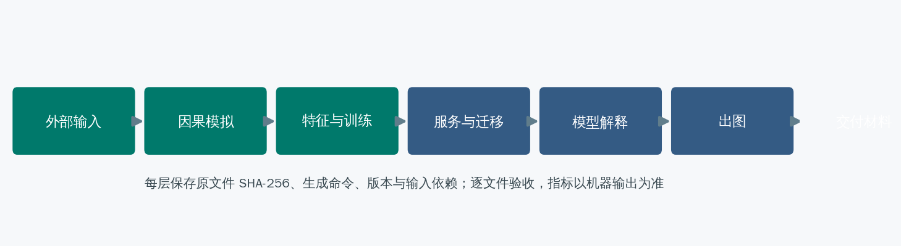
--verify 逐项核验）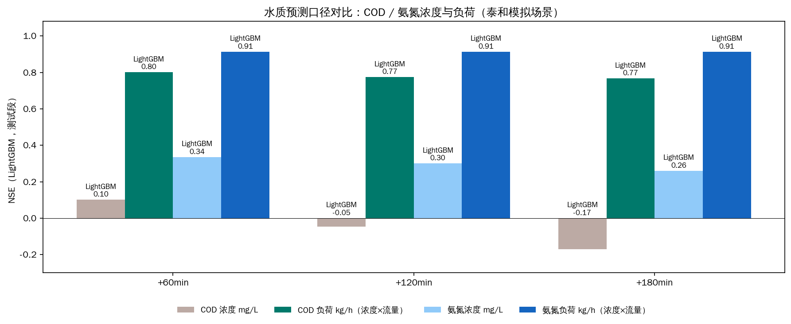
污染冲击异常分类（模拟场景）：以在线可观测水质（COD、氨氮、pH、SS）与流量的滞后/差分/3h 滚动 z 分数特征训练 LightGBM 分类器，识别模拟 shock_event 标签——测试段步级 precision/recall/F1 = 1.0、事件级首次报警延迟 0 min。但测试段仅 1 次事件，只证明链路可行性，不代表真实工况性能；实厂需多厂真实异常数据重新标定阈值与误报率。出处：reports/anomaly_metrics.json。
短临雨预报输入实验（+2h，模拟口径）：无雨预报 NSE 0.972 / 含噪（σ=0.3）0.982 / 理想 0.983；接入雨预报是补齐短历时尖峰预警能力的第一优先级接口（把未来 0~2h 累计雨量加入特征）。出处：reports/rain_forecast_exp.json。
十、数字溯源约定
- 所有性能数字：
reports/forecast_metrics.json/reports/deep_forecast.json（脚本自动生成，不手改）； - 全部实验结论：对应
reports/*.json；汇总版：实验结果.md； - 交付文件完整性：lineage.json（183 项 SHA-256）+
python -m src.viz.lineage --verify； - 本页表格为阅读友好版；与 JSON 有出入时以 JSON 为准。